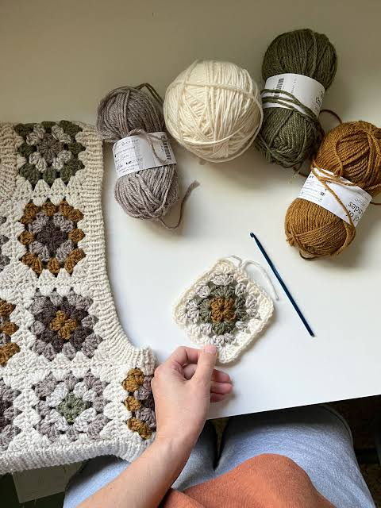
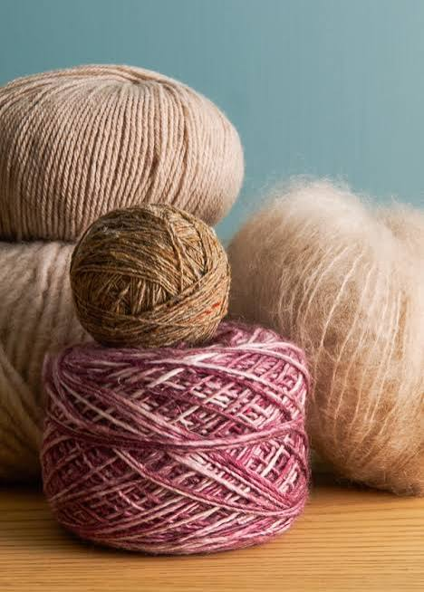

MAIN

Crochet is a skill that can be used in a variety of ways, from creating clothing to making small or plushies with each pattern to make it similar yet distinct. it has the ability to create complicated patterns for the product to be different with every new pattern as it

Yarn itself has a long history with it starting over 10,000 years ago. the first type of yarn was made with plant fibers such as flax and nettle.